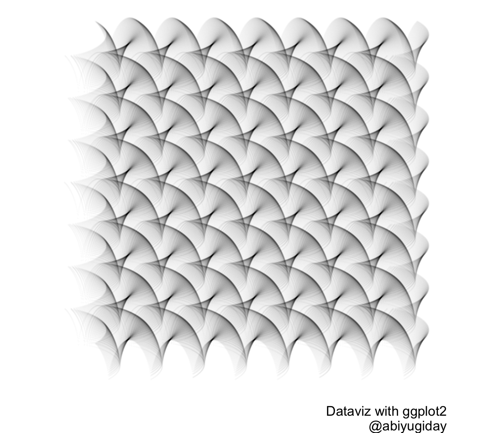
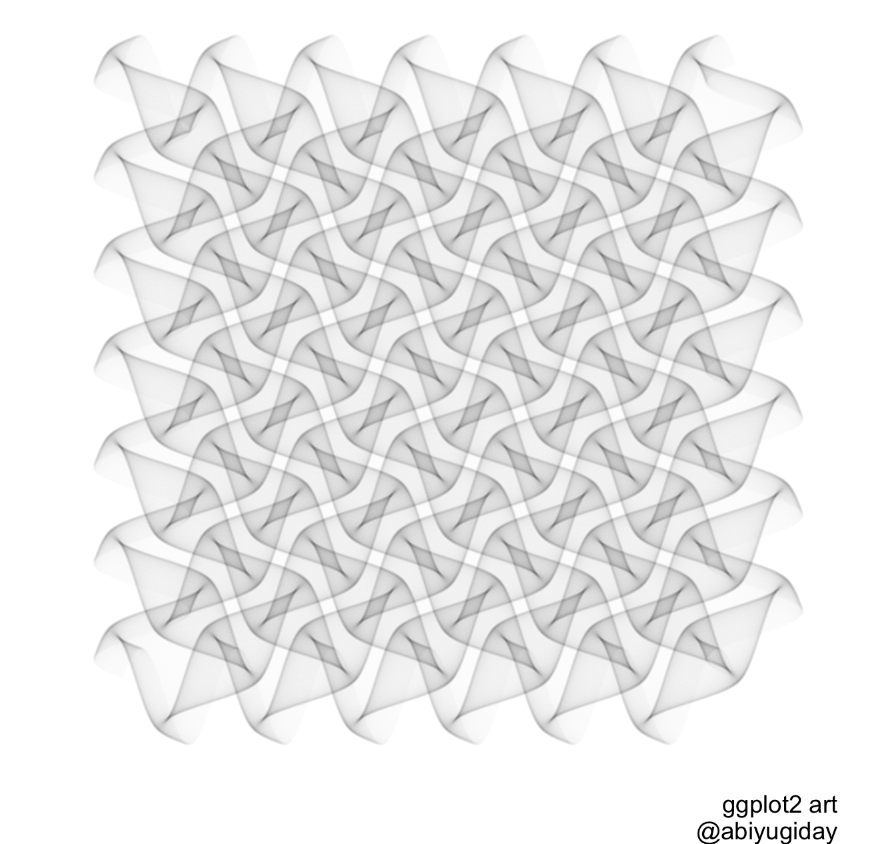

 Data Science Profession Bio - short
- Identify pattern, extract value from data
- Experience in framing specific and relevant questions
- Refined workflow of processing all size of data
- R statistical programming - “Tidyverse” tools
- Clean, blend and Transform messy data into shape
- Deliver reproducible document (markdown), maps(ggplot2, sf), and models(H20)
- Build custom dashboards(flexdashbaord, shiny)
- Data Visualization trainer with ggplot2
Longer version of personal and professional Bio
My name is Abiyu Giday. I am Ethiopian American. I live in Fairfax County, Virginia USA. I am proud father of three wonderful children, two in college and one freshman in high school. I enjoy working with data and extracting value from it to help organization answer important business questions. Have been analyzing data since 2007, but more effectively and full time, in the last five years. Have completed modern data analysis courses and received DS certification.
 What I do:
I love working with data, and enjoy turning it into a valuable asset. I use tidyverse principals to ingest, process, transform, visualize and model data. Depending on question and type of data, I use industry standard highly effective tool set, a refined workflow and best practices to analyze and extract knowledge from data. Because the DS filled is always evolving, I’ve dedicated myself to acquiring and continually updating the latest processes and practices. My effort includes attaining a demanding DS certificate from a program thought by industry expert professors.
My journey
My Journey to data science started with my arrival to America as a teenager. I completed my high school and earned Bachelor of Science degree in EE in Washington, DC. I have over two decades of working experience for fortune 500 companies as telecommunication engineer and business development manager. I was privileged to have the opportunity to travel all over the world, and was an expat in MEA region for few years. My focus in data started in 2007, when a company I worked for wanted to build a data product from its own customer base. Learned a lot from those early years. There after, I left corporate world to start my communication consulting company, with varying degree of success. From there, I completed my DS certification in 2015, and put 100% of my focus on data in a very detailed scientific reproducible workflow.
Disclaimer:
Data Science is a very wide discipline comprised computer science, mathematics, statistics,geographic mapping to name a few. Depending on your needs and requirments, I will give you candid answer if I can meet your requirments. If you require someone who builds machine learning alogrithms from scratch, I many not be the right person for you. Regardless of your area of interest, though, I can work with your SME to collect the data, transform and enrich it to help you get the most out it.